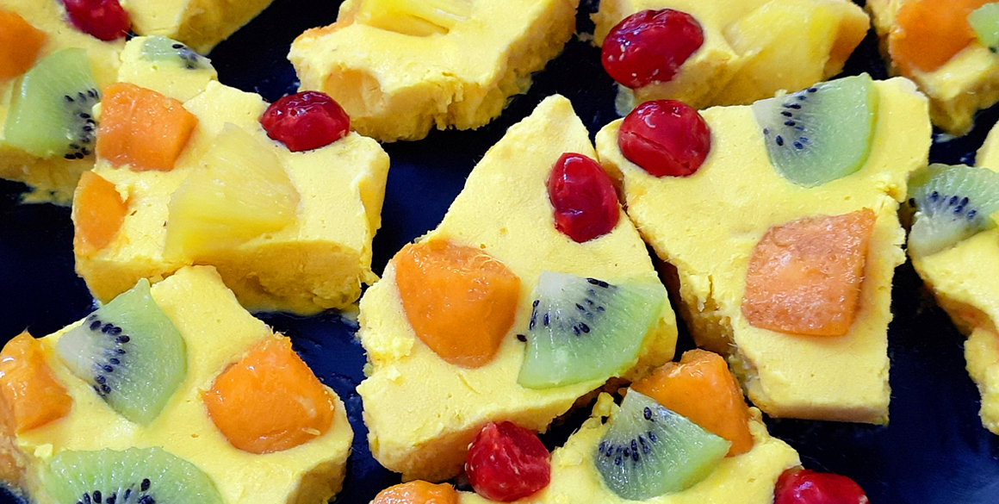
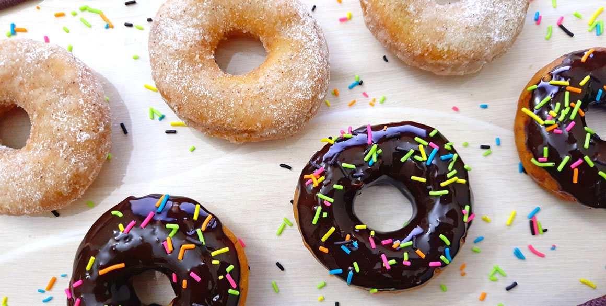
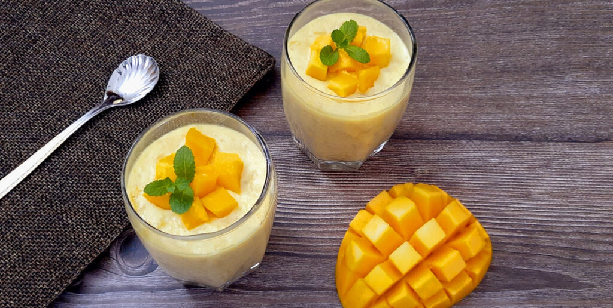
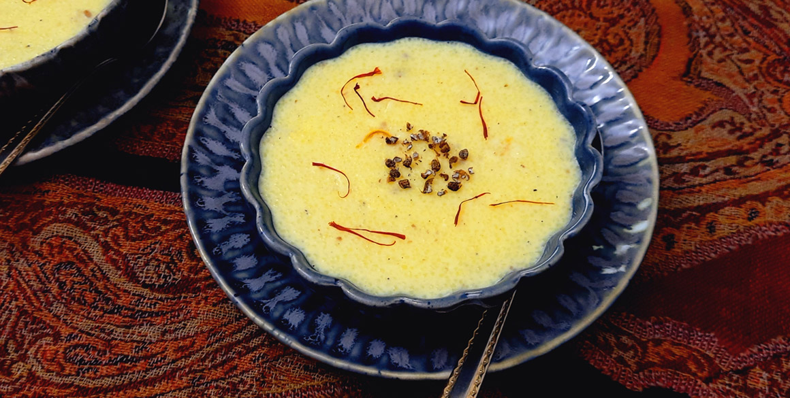
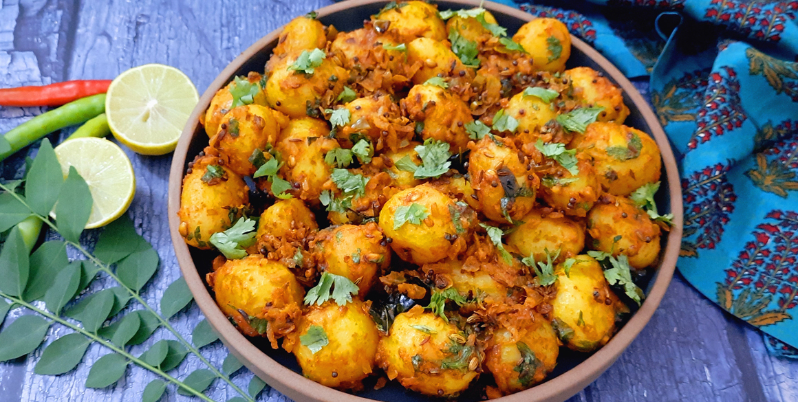
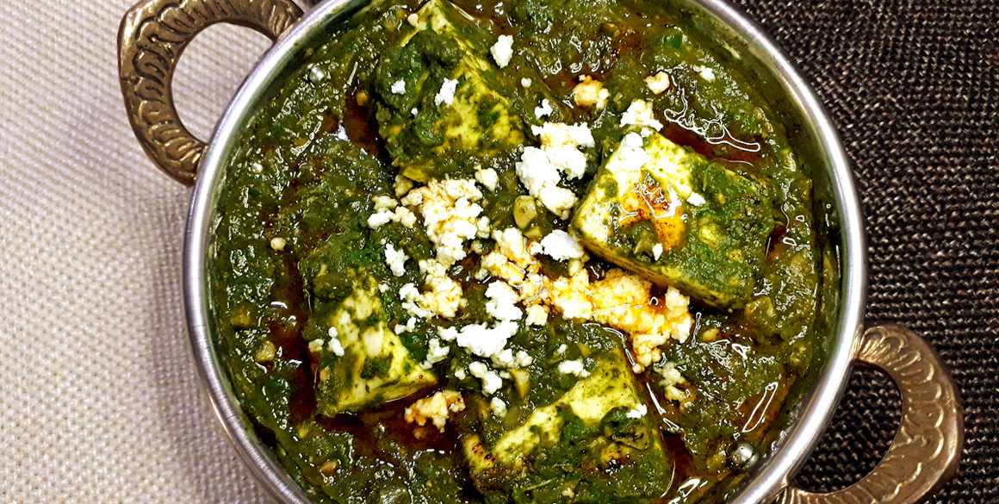
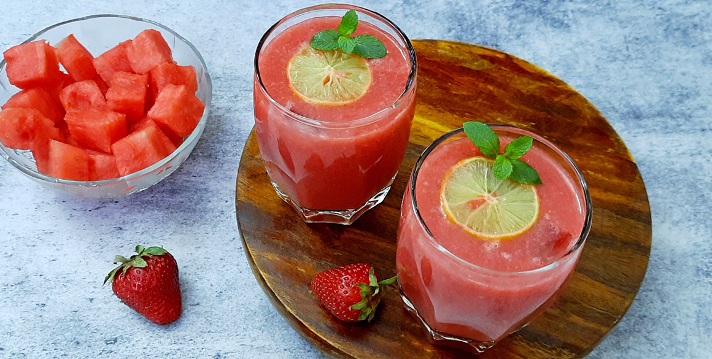
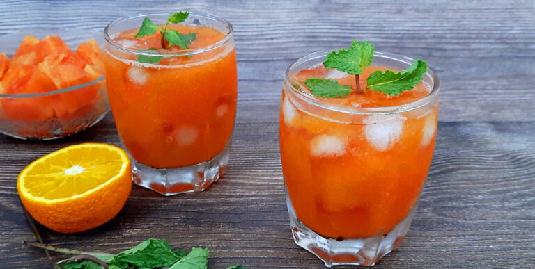
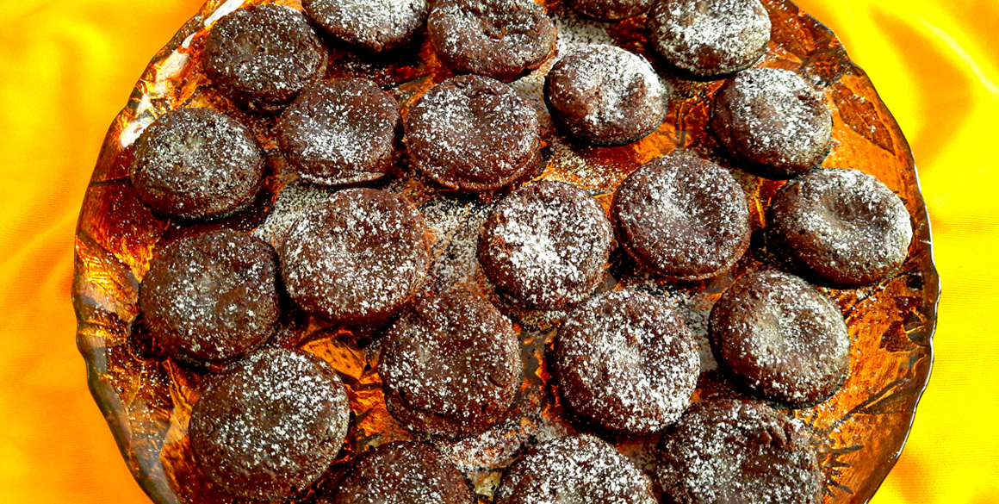
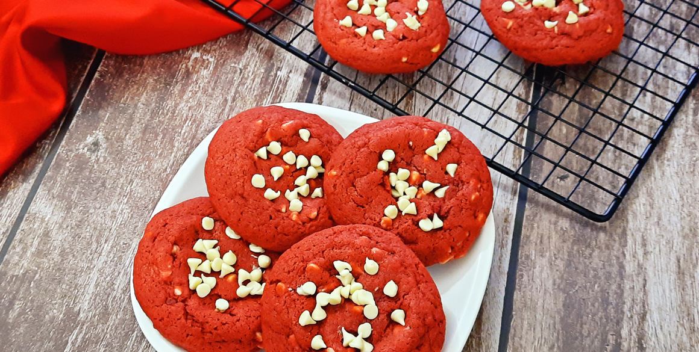

Sugar Free Gulaab Jaamun
Ingrediants :-
- 1 cup milk powder
- 1/2 cup all-purpose flour
- 2 tbsp oil
- 1/2 tsp baking soda
- Water for kneading and sugar-free Syrup
- 2 cups artificial sweetener (Sugar Free Natura Cook and Bake)
- 2 tsp cornflour
- Juice of one small lemon
- Oil for deep frying
- 1/2 cup desiccated coconut (for garnising)
Reciepe:-
- To begin, mix together milk powder, all purpose flour, oil, and baking soda in a large bowl. Knead it using about 1/4 cup of water. Add more if required. Make sure it is not too soft. Let it rest for 5-10 minutes.
- In the meantime, prepare the sugar-free syrup. Mix together the artificial sweetener, water, and cornflour. Make sure there are no lumps.
- Bring it to a boil. Add in the juice of one lemon and boil for about 2 minutes. Keep aside.
- To prepare the grass, add a few drops of green food coloring in half a cup of desiccated coconut. Mix well and keep aside.
- Once the dough is well rested, roughly shape it into logs. Heat oil for deep frying. Add in the logs on medium to low heat. Do not move them until they rise to the top. Deep fry until brown in color.
- Add them to the warm syrup and spoon the liquid over the log. I made sure the quantity of syrup is less so that they don't disintegrate.
- Now arrange the logs on a serving dish placing them on a bed of the green coconut. Dust some sugar on top and place a few glazed cherries on the side.
- The Sugar Free Gulab Jamun Yule Logs are ready to serve.
Tropical Frozen Yogurt Bark (Nut-Free Froyo)

Ingrediants :-
- 1+1/2 cups Greek yogurt
- 1 cup mangoes chopped
- 1 cup pineapples chopped
- 2 tbsp honey (optional)
- 1/4 cup diced mangoes
- 1/4 cup diced pineapple
- 1/4 cup kiwi slices quartered
- 1/4 cup dried berries
For garnish
Reciepe:-
- To begin, blend together the mangoes and pineapple until smooth.
- Add the Greek yogurt. If you prefer a sweeter version, add honey. Blend it well.
- Line a freezer-proof dish with parchment paper. Pour in the mixture and flatten it out to your desired thickness.
- Garnish with diced mangoes, pineapples, kiwis, and berries. Freeze for at least 6-8 hours, preferably overnight.
- Once well frozen, break it down into desired-size pieces.
- Serve Tropical Frozen Yogurt Bark immediately.
- Avoid using fresh pineapple for the recipe or the yogurt may turn bitter. Use canned pineapple. If not available, cook slices in sugar syrup for a few minutes before use.
- If you do not have Greek yogurt available, you can use hung curd for the recipe.
NOTES

No Yeast Eggless Donuts
Ingrediants :-
- 1 cup all-purpose flour
- 1/2 cup powdered sugar
- 1 tsp baking powder
- 1/2 tsp baking soda
- 1/2 tsp cinnamon powder
- 2 tbsp oil
- Curd for kneading
- Oil for deep frying
- 1 cup powdered sugar
- 1/2 cup cinnamon powder
- 1 cup melted chocolate
- Sprinkles of your choice
For sugar dusting
For chocolate glaze
Reciepe:-
- To begin, blend together the mangoes and pineapple until smooth.To begin, prepare the dough for the donuts. In a large bowl, mix together all-purpose flour, powdered sugar, baking powder, baking soda, cinnamon powder, and oil.
- Mix until you get a breadcrumb-like consistency. Knead it into a soft dough using curd. Cover and leave it to rest for at least an hour.
- Once it is well-rested, divide the dough into two equal portions. Dust the counter well with flour. Roll out the dough into at least a 1cm thickness.
- Use a donut cutter to cut out the donut shape. If you don’t have it available, you can use a tumbler and a bottle lid as I did.
- Heat oil for deep frying. Deep fry the donuts on medium heat until they are light to golden brown in color.
- I have glazed the donuts two ways.
- For the classic version, in a large dish, mix together about a cup of powdered sugar with a teaspoon of cinnamon powder. Dust the donuts with the sugar until they are well covered. Keep aside.
- For the chocolate glaze, take a cup of melted chocolate in a bowl. Dip in the donuts halfway in. Add sprinkles of your choice.
- The No Yeast Eggless Donuts are ready to serve.

Eggless Mango Soufflé
Ingrediants :-
- 2 tbsp gelatine/agar-agar
- 500 ml vanilla ice cream
- 1 cup mango pulp
- 1 cup cream
- 2-3 tbsp powdered sugar
- Fresh mango for garnish
- Sprigs of mint for garnish
Reciepe:-
- To begin, soak gelatine in half a cup of water. Mix well and keep aside for at least 5 minutes.
- Take vanilla ice cream in a large bowl. I have used the family pack brick. Cut it up roughly.
- Add in mango pulp. I prefer to keep it a bit chunky.
- Add cream, powdered sugar as per taste, and the soaked gelatine.
- Mix with an electric mixer until the mixture is blended well. Do not whip it too much making sure the ice cream does not melt completely.
- Transfer the mixture into serving bowls and refrigerate for a few hours until set. Top it with chopped mangoes and a sprig of mint.
- The Eggless Mango Soufflé is ready to serve.

Kong Phirin | Kashmiri Saffron Semolina Phirni (Nut Free)
Ingrediants :-
- 1/3 cup semolina (sooji or rava)
- 1/3 cup sugar
- 1 tsp cardamom powder
- 1 liter full fat milk
- 20-25 saffron strands (large pinch)
- Crushed cardamom seeds for garnish
Reciepe:-
- To begin, soak semolina (sooji) in half a cup water and keep aside for 5-10 minutes. This avoids lumps being formed when added to the milk.
- Soak saffron in warm milk and keep aside.
- Take full-fat milk in a heavy bottom pan and bring it to a boil stirring occasionally.
- Reduce the heat. Add the soaked semolina. Cook on low to medium heat stirring continuously until it is cooked and thickens a bit.
- Now add in sugar, the soaked saffron, and cardamom powder. Mix well and continue cooking until it is a custard consistency and coats the back of the spoon.
- Pour into serving bowls. Refrigerate them for 2-3 hours until set.
- Garnish when almond slivers and saffron strands. Since my kitchen is a nut-free kitchen, I have used crushed cardamoms instead.
- The Kong Phirin is ready to serve. Serve chilled.

Spicy Bombay Potatoes
Ingrediants :-
- 500 gm baby potatoes
- 1 medium onion finely chopped
- 1-2 chopped green chillies
- 1 sprig curry leaves
- 1" piece of ginger finely chopped
- 2 tbsp lemon juice
- 2 tsp chopped green coriander leaves
- 2 tsp salt
- 4 tbsp oil
- 1 bay leaf
- 1 tsp mustard seeds (sarson)
- 1 tsp cumin seeds (jeera)
- 1 tsp fennel seeds (saunf)
- 1 tsp crushed coriander seeds (dhania)
- 1/4 tsp fenugreek seeds (methi dana)
- 1/4 tsp asafoetida (hing)
- 1/2 tsp salt or to taste
- 1 tsp Kashmiri red chilli powder
- 1 tsp cumin powder (jeera)
- 1 tsp coriander powder (dhania)
- 1/2 tsp turmeric powder (haldi)
(Spices)
Reciepe:-
- Wash and boil the baby potatoes in 2 tsp of salt. Peel and keep aside. If baby potatoes are not available, you can use regular-sized potatoes cut into bite-sized pieces.
- Heat 4 tbsp of oil in a pan. Add in the potatoes and saute until they colorize. Remove and keep aside.
- In the same oil, add a bay leaf, mustard seeds, cumin seeds, fennel seeds, crushed coriander seeds, fenugreek seeds, and asafoetida (hing). Allow them to crackle.
- Add chopped onions, green chillies, curry leaves, and ginger. Saute until they change color.
- Next, add the dry masalas – salt, Kashmiri red chilli powder, cumin powder, coriander powder, and turmeric powder. Mix.
- Add about ½ cup water so that the masalas do not burn. Cook until the masala dries out a bit.
- Now add in the potatoes. Mix until well-coated. Cook for 3-4 minutes so that the potatoes absorb the flavors.
- Finish with lemon juice and chopped green coriander leaves.
- The Bombay Potatoes are ready to serve. Garnish with some more chopped coriander leaves. Server hot with rotis or paranthas.

Palak Paneer
Ingrediants :-
- 250 gm spinach
- 200 gm paneer (cottage cheese)
- 1 tbsp garlic and ginger (finely chopped)
- 1 medium onion finely chopped
- 1-2 green chillies chopped
- 2 tomatoes pureed
- 2 tbsp oil
- 1 bay leaf
- 1 tsp red chillies powder
- 1 tsp cumin powder (jeera)
- 1 tsp coriander powder (dhania)
- 1 tsp garam masala
- 2 tsp dry fenugreek leaves (kasoori methi)
- Salt to taste
SPICES
Reciepe:-
- Clean and wash the spinach. Boil water in a pan. Blanch the spinach until it changes color.
- Remove it to a bowl with ice cold water so that it retains its color. Squeeze out the water from the spinach. Puree it into a smooth paste and keep aside.
- Cut the paneer into bite sized cubes.
- Heat oil in a pan. Add the bay leaf.
- Add in the garlic. When it changes color, add the ginger and cook for a minute.
- Add the chopped onions and the green chillies. Saute until the onions are translucent.
- Add the tomato puree and saute for a minute or two.
- Now add the dry masalas – salt, red chillies powder, cumin powder and coriander powder. Mix well and saute until you can see the oil appearing on the sides.
- Add in the spinach puree. Mix well. You can add a bit of water if required.
- When it begins to bubble, add in the paneer pieces. Mix until they are well coated. Do not cover the pan or the spinach will lose its color.
- To finish, add the garam masala and kasoori methi. Mix well. Palak paneer is ready to serve.

Watermelon Strawberry Cooler
Ingrediants :-
- 2 cups cubed watermelon (deseeded)
- 1 tbsp powdered sugar
- 1 tbsp lemon juice
- 4-6 strawberries
- 1/2" piece of ginger
- 1/2 tsp black salt
- Crushed ice
- 2-3 sprigs of mint leaves
- 3-4 lemon slices for garnish
For Garnish
Reciepe:-
- To begin, blend the strawberries and ginger into a smooth paste.
- Add in the watermelon cubes and black salt. Blend until smooth.
- Transfer to a pitcher. Add in the powdered sugar and lemon juice. Mix well and refrigerate until chilled.
- To serve, add a few ice cubes to the serving glass. Pour in the chilled watermelon-strawberry mixture. Top it with a lemon slice and a spring of mint.
- The Watermelon Strawberry Cooler is ready to serve.
NOTE:-
-
Add a dash of vodka for an equally refreshing cocktail.

Papaya and Orange Smoothie
Ingrediants :-
- 1 medium ripe papaya
- 1 cup fresh orange juice
- Juice of one lemon
- Mint leaves for garnish
- Ice cubes as required
- Honey (optional)
Reciepe:-
- To begin, peel the papaya, remove the seeds, and cut them into chunks.
- Add them to a blender along with orange juice and lemon juice. Blend until smooth. If you prefer it sweeter, add honey as per taste. If the smoothie is too thick, you can add water now.
- Fill the serving glasses halfway with ice cubes.
- Pour in the smoothie. Gently mix.
- Garnish with a sprig of mint. The Papaya and Orange Smoothie is ready to serve.

Eggless Chocolate Brownie Appe Bites
Ingrediants :-
- 1 cup all-purpose flour
- 1 1/2 cups powdered sugar
- 1 tsp baking powder
- 1/2 cup cocoa powder
- 1 tsp vanilla essence
- 1/2 cup oil
- 3/4 cup milk
- Oil for brushing
- Powdered sugar for dusting
Reciepe:-
- To begin, sift together all-purpose flour, powdered sugar, cocoa powder, and baking powder in a large bowl to incorporate air into it.
- Add in vanilla essence and refined oil. Mix well.
- Next, add in the milk in small quantities until the batter is dropping consistency.
- Heat the appe pan and grease it well with oil.
- Pour in the batter into each of the pits no more than 3/4th level. Brownies rise and then sink back. If you fill them to the top, they would end up overflowing and ruin the shape of the brownies.
- Cover with a lid and let them cook on low heat. Check with a toothpick to make sure once done. Do not overcook, or the brownies would become hard.
- Remove them on a plate and allow them cool. Dust them with powdered sugar.
- The Chocolate Brownie Appe Bites are ready to serve.
Red Velvet Chocolate Chip Cookie">
Red Velvet Chocolate Chip Cookie
Ingrediants :-
- 1 1/2 cups all-purpose flour
- 2 tbsp cocoa powder
- 1 1/2 tsp cornflour
- 1 tsp baking powder
- 1/2 tsp baking soda
- 1/2 cup butter
- 1 cup sugar
- 1 egg
- 1 tsp vanilla essence
- 1 tbsp red food coloring
- 3/4 cup white chocolate chips
Reciepe:-
- In a bowl, sift together all-purpose flour, cocoa powder, cornflour, baking powder, and baking soda. Keep aside.
- In another bowl, cream together the butter with sugar until light and fluffy.
- Add in the egg, vanilla essence, and red food coloring. Whisk again until light and fluffy.
- Now add the flour mixture in batches mixing gently bringing it all together. Do not overmix.
- Finally, add half a cup of the chocolate chips and mix well. Refrigerate the cookie dough for an hour so that it is easier to handle.
- Grease the baking tray or line it with parchment paper. In the meantime, preheat the oven to 180°C or 350°F.
- Using a cookie scoop, scoop out the dough onto the baking tray at least two inches apart.
- Bake at 180°C or 350°F for 8-9 minutes. Remove from the oven. While it is still warm, add some chocolate chips on top and press down gently. Let the cookies cool for a few minutes on the baking tray before transferring them to a rack. Allow them to cool completely.
- The Red Velvet Chocolate Chip Cookies are ready to enjoy.